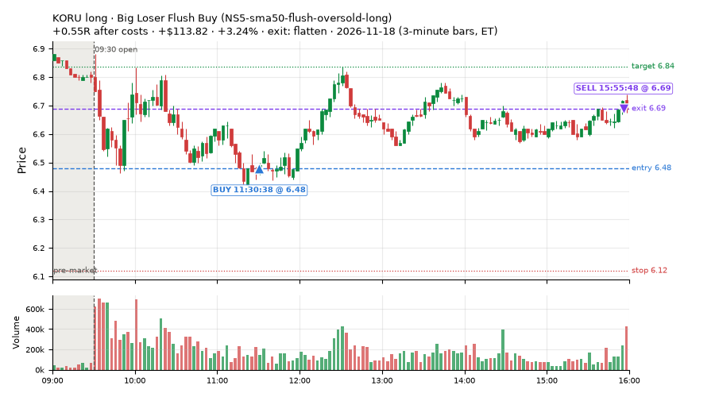
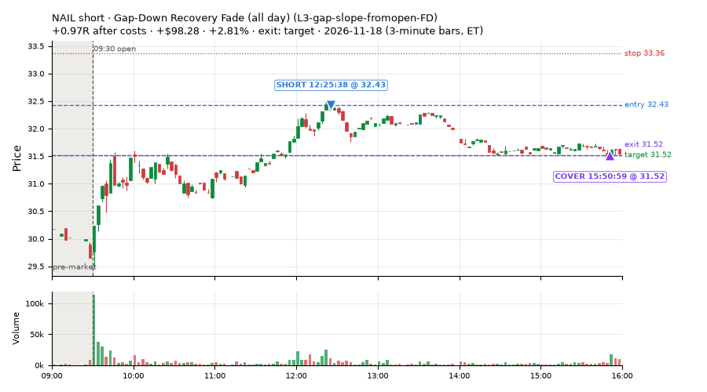
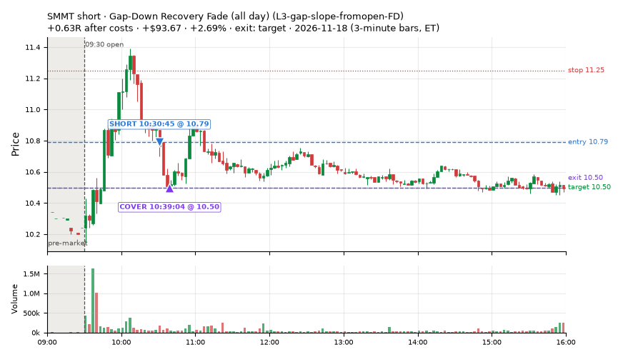
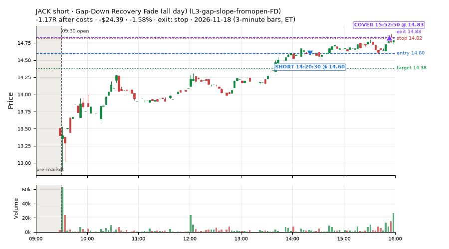
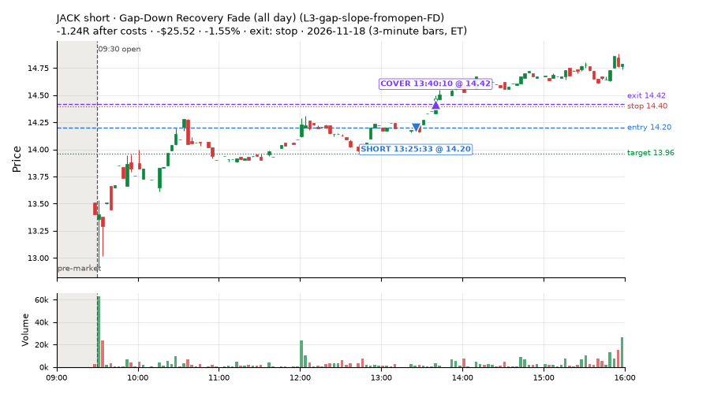
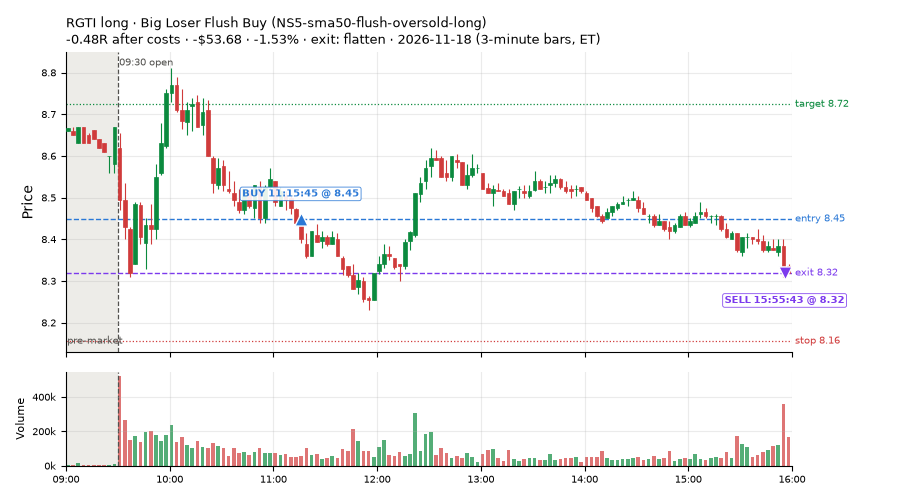
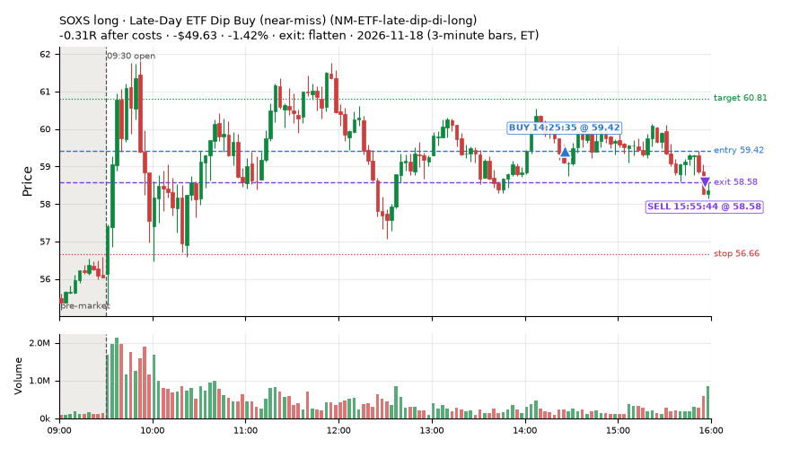
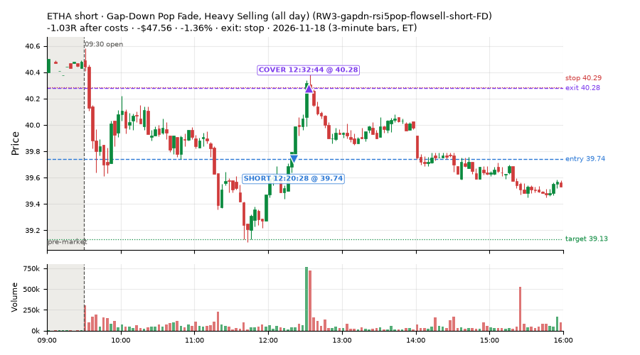

49 trades · win rate 49% · P/L $299.32
PROBATION: no live setup has passed both locked test periods. 10 owner-directed setups added 2026-10-08 (MarcoFlow top 5 + 5 new), untested live. RW6G1 (RW6 + VWAP band guard) added 2026-10-09, probation.

| Symbol | Setup | Side | In | Out | Entry | Exit | Exit reason | % gained | P/L |
|---|---|---|---|---|---|---|---|---|---|
| KORU | Big Loser Flush Buy (NS5-sma50-flush-oversold-long) | long | 11:30 | 15:55 | 6.48 | 6.69 | flatten | +3.24% | $113.82 |
| NAIL | Gap-Down Recovery Fade (all day) (L3-gap-slope-fromopen-FD) | short | 12:25 | 15:50 | 32.43 | 31.52 | target | +2.81% | $98.28 |
| SMMT | Gap-Down Recovery Fade (all day) (L3-gap-slope-fromopen-FD) | short | 10:30 | 10:39 | 10.79 | 10.50 | target | +2.69% | $93.67 |
| Symbol | Setup | Side | In | Out | Entry | Exit | Exit reason | % lost | P/L |
|---|---|---|---|---|---|---|---|---|---|
| JACK | L3-gap-slope-fromopen-FD | short | 14:20 | 15:52 | 14.60 | 14.83 | stop | -1.58% | $-24.39 |
| JACK | L3-gap-slope-fromopen-FD | short | 13:25 | 13:40 | 14.20 | 14.42 | stop | -1.55% | $-25.52 |
| RGTI | NS5-sma50-flush-oversold-long | long | 11:15 | 15:55 | 8.45 | 8.32 | flatten | -1.53% | $-53.68 |
| SOXS | NM-ETF-late-dip-di-long | long | 14:25 | 15:55 | 59.42 | 58.58 | flatten | -1.42% | $-49.63 |
| ETHA | RW3-gapdn-rsi5pop-flowsell-short-FD | short | 12:20 | 12:32 | 39.74 | 40.28 | stop | -1.36% | $-47.56 |








Signal to fill: median 1s, 90th percentile 3s (49 trades). Bars close each minute; the order follows the bar close.
Best excursion (MFE): median 0.57R; worst (MAE) median 0.71R. 20% of trades never got +0.25R in our favour; 0 reached +1R and still closed at or below 0.
| Symbol | Setup | Best R | Worst R | Closed R |
|---|---|---|---|---|
| FE | RW5-heat30-flowsell-rsi5pop-gapdn-short-FD | +0.90 | -1.01 | -1.14 |
| LNT | RW3-gapdn-rsi5pop-flowsell-short-FD | +0.44 | -1.02 | -1.11 |
| JACK | L3-gap-slope-fromopen-FD | +0.20 | -1.53 | -1.24 |
| FOUR | ST7-rsi50dn-long-pm-t1s1-FD | +0.88 | -0.75 | -0.56 |
| ECVT | L3-gap-slope-fromopen-FD | +0.09 | -1.24 | -1.34 |
| Entry time | Trades | Win | Avg R | P/L |
|---|---|---|---|---|
| 09:50-10:30 | 5 | 60% | -0.01 | $87.14 |
| 10:30-11:30 | 9 | 56% | -0.12 | $114.60 |
| 11:30-13:00 | 23 | 61% | +0.09 | $248.20 |
| 13:00-14:00 | 6 | 0% | -0.72 | $-90.10 |
| 14:00-16:00 | 6 | 33% | -0.36 | $-60.52 |
| Setup | Trades | Win | Avg R after costs | Adj R (net of SPY) | Avg R ex-market (all sessions) | P/L |
|---|---|---|---|---|---|---|
| Gap-Down Recovery Fade (all day) (L3-gap-slope-fromopen-FD) | 19.0 | 47% | -0.13 | -0.16 | +0.04 (beta -0.70, n 175) | $320.81 |
| Late-Day ETF Dip Buy (near-miss) (NM-ETF-late-dip-di-long) | 3.0 | 67% | +0.03 | +0.01 | +0.15 (beta -0.22, n 12) | $-11.09 |
| Big Loser Flush Buy (NS5-sma50-flush-oversold-long) owner-directed; holdouts once: Sep-Oct -0.008R n73, Apr-Jun +0.002R n231 | 4.0 | 75% | +0.44 | +0.35 | +0.06 (beta +0.62, n 41) | $149.14 |
| Gap-Down Pop Fade, Heavy Selling (all day) (RW3-gapdn-rsi5pop-flowsell-short-FD) | 14.0 | 50% | -0.29 | -0.29 | -0.01 (beta -1.08, n 161) | $-98.56 |
| Gap-Down Pop Fade (all day) (RW5-heat30-flowsell-rsi5pop-gapdn-short-FD) | 8.0 | 38% | -0.04 | -0.07 | +0.02 (beta -0.89, n 173) | $-23.58 |
| RSI Collapse Dip Buy (all day) (ST7-rsi50dn-long-pm-t1s1-FD) | 1.0 | 0% | -0.56 | -0.76 | +0.06 (beta -0.02, n 34) | $-37.40 |
Market direction (SPY, beta 1) accounted for $17.27 of today's $299.32; the rest ($282.05) came from the setups themselves. Avg R net of SPY: -0.14 (incl. a hedge leg's cost; report only).
6 setups live today. Today: 233 signals, 49 taken, 10 lost because another setup held the symbol (4%). Since 2026-10-06 (32 sessions): 5653 signals, 1363 taken, 204 lost to other setups (4%). Peak open positions today 33 of 77 slots. Earnings blackout removed 321 symbols before scanning.
Simulated playing time (not live): 4264 what-if trades of signals not taken, avg +0.12R, 63% winners; of them 204 lost to another setup (avg -0.11R).
Silent: intraday_momentum · Crowded out: MF4-h40-open-flowsell, MF3-open-flowsell-rsi5hi, MF5-flowsell-vwapup-rsi5hi · Starved: MF2-open-rsimidhi-flowsell
| Prio | Setup | Today sig / taken | Sessions | Signals / taken / trades | Taken/day | Expected/day | Lost to other setups | Lost to (setup n) | Top skip reasons | SIMULATED: not-taken n / avg R / win | Verdict |
|---|---|---|---|---|---|---|---|---|---|---|---|
| 1 | Late-Day ETF Dip Buy (near-miss) NM-ETF-late-dip-di-long | 3 / 3 | 6 | 12 / 12 / 12 | 2.00 | – | 0 | – | – | 0 / – | slow 10.0 entries/week; ~6 weeks to 60 trades |
| 2 | Gap-Down Pop Fade (all day) RW5-heat30-flowsell-rsi5pop-gapdn-short-FD | 15 / 8 | 24 | 251 / 173 / 173 | 7.21 | 12.79 | 0 | – | spread / quote / size 31, daily loss cap 25, not shortable / shorts off 21 | 78 / -0.04R / 47% | ok 36.0 entries/week |
| 3 | Gap-Down Pop Fade, Heavy Selling (all day) RW3-gapdn-rsi5pop-flowsell-short-FD | 22 / 14 | 24 | 281 / 161 / 161 | 6.71 | 13.59 | 1 | CWT14-failbrk-pdl-p10-lowvol-long 1 | daily loss cap 42, spread / quote / size 39, not shortable / shorts off 38 | 120 / +0.17R / 60% | ok 33.5 entries/week |
| 4 | RSI Collapse Dip Buy (all day) ST7-rsi50dn-long-pm-t1s1-FD | 1 / 1 | 18 | 62 / 34 / 34 | 1.89 | 2.17 | 0 | – | spread / quote / size 26, daily loss cap 2 | 28 / +0.21R / 61% | slow 9.4 entries/week; ~6 weeks to 60 trades |
| 5 | Gap-Down Recovery Fade (all day) L3-gap-slope-fromopen-FD | 188 / 19 | 16 | 3138 / 175 / 175 | 10.94 | – | 65 | L3-gap-slope-fromopen-FD 65, L3-gap-slope-rsi5hi-FD 14 | not shortable / shorts off 1992, per-setup cap 648, spread / quote / size 134 | 2957 / +0.20R / 66% | ok 54.7 entries/week |
| 6 | Big Loser Flush Buy NS5-sma50-flush-oversold-long | 4 / 4 | 30 | 62 / 41 / 41 | 1.37 | 2.41 | 0 | – | daily loss cap 13, spread / quote / size 8 | 21 / +0.00R / 52% | slow 6.8 entries/week; ~9 weeks to 60 trades |
Every trade is attached as a CSV you can open and edit in Excel or Google Sheets. Live page: https://misiti15.github.io/MCF/live/